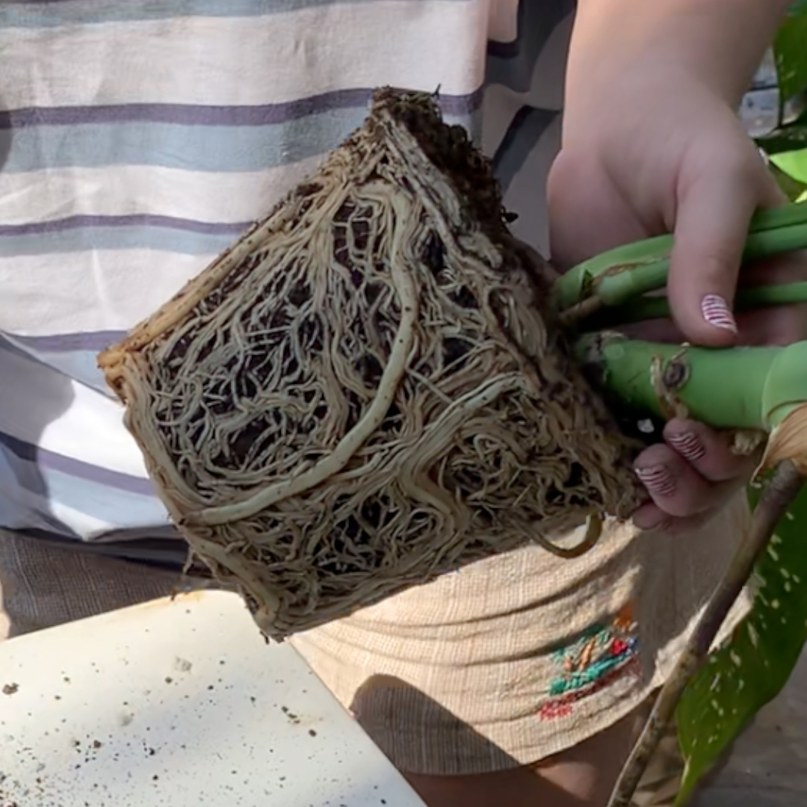

Como Saber a Hora de Trocar o Vaso da Sua Planta

Trocar o vaso da sua planta pode parecer apenas uma questão estética, mas, na verdade, é um dos cuidados mais importantes para garantir o crescimento saudável e o bem-estar da sua verdinha. Assim como a gente, as plantas também precisam de espaço para crescer, se expandir e respirar — literalmente.Dar um lar novo para sua planta é muito mais que uma questão de beleza; é um gesto de carinho que garante que sua verdinha continue crescendo feliz e saudável! Assim como a gente, as plantas precisam de espaço para esticar as raízes, respirar e se desenvolver plenamente.
Mas como saber a hora certa de fazer essa mudança? Abaixo, listamos os principais sinais de que sua planta está pedindo por um novo lar.
1. Raízes para fora: o sinal mais óbvio
O sinal mais claro! Se as raízes começam a escapar pelos furos de drenagem ou aparecem na superfície da terra, é um grito de socorro. Isso significa que ela já preencheu todo o espaço disponível e está procurando por mais. É como se sua planta estivesse sem espaço para as pernas no sofá!
2. A água escorre rápido demais
Se ao regar a água passa direto e quase não molha o substrato, pode ser que o vaso esteja tomado por raízes demais, dificultando a absorção. Um solo muito enraizado perde a capacidade de reter umidade adequadamente.
3. Crescimento estagnado
Sua planta, mesmo recebendo luz, adubo e água na medida certa, parece que travou no tempo? O crescimento estagnado é um forte indício de que a falta de espaço está limitando o desenvolvimento. Ela simplesmente não tem para onde ir!
4. Folhas menores ou amareladas
Folhas novas que nascem menores que o habitual ou que começam a amarelar sem explicação podem ser um sinal de estresse radicular. As raízes, quando apertadas, não conseguem absorver os nutrientes de forma eficiente, refletindo na saúde das folhas.
5. O vaso virou "roupa apertada"
Algumas plantas têm raízes com uma força incrível! Se você notar que o vaso está deformado, trincado, ou com protuberâncias, é porque as raízes estão literalmente empurrando as paredes. Elas precisam de liberdade para crescer!
6. A planta vive tombando
Plantas que crescem muito em altura, mas não têm uma base igualmente robusta, podem ficar "top heavy" (pesadas demais no topo). Se sua planta vive tombando com facilidade, o vaso atual não oferece a estabilidade necessária. É hora de um novo lar que a mantenha firme e forte!
Qual o tamanho ideal do novo vaso?
Evite o exagero! Geralmente, o ideal é escolher um vaso que seja de 2 a 5 cm maior em diâmetro que o anterior. Um vaso muito grande pode reter excesso de umidade, prejudicando as raízes. O objetivo é um crescimento equilibrado e feliz.
Dica de ouro para o transplante
Aproveite o momento da troca para fazer um "detox" nas raízes! Observe-as com carinho: remova as partes escuras ou moles (que indicam apodrecimento) e, se a espécie permitir, você pode até separar algumas mudas para multiplicar sua plantinha. É uma oportunidade perfeita para garantir um recomeço saudável!
E não se assuste se, nos primeiros dias pós-transplante, sua planta parecer um pouco murcha ou desanimada. É super normal! Ela só está se readaptando ao novo ambiente. Com um pouco de paciência e os cuidados de sempre, sua verdinha logo estará radiante novamente!
Produtos indicados

Defende – Cochonilha, Lagarta e Repelente Natural
Proteja suas plantas com um repelente natural eficaz contra cochonilhas, lagartas e outras pragas comuns.
Comprar
Pulverizador de Compressão Prévia – 2L Pali
Aplicação prática e eficiente de soluções no jardim com pulverização precisa e ergonômica.
Comprar
Tesoura para Poda Manual com Trava
Ferramenta de corte precisa, segura e confortável para manter suas plantas sempre bem cuidadas.
Comprar
Curso Natureza – Jardinagem, Cultivar em Vasos
Guia visual e prático para transformar qualquer espaço em um jardim produtivo e acolhedor. Perfeito para quem ama plantar em vasos.
Comprar
Dias Para Plantar – Carol Costa
Um convite afetivo para se reconectar com a natureza através da jardinagem. Repleto de reflexões e dicas com o jeitinho único da Carol.
Comprar
Guia de Combate às Pragas no Jardim
Identifique, previna e elimine pragas com orientações práticas para um jardim mais saudável.
Comprar